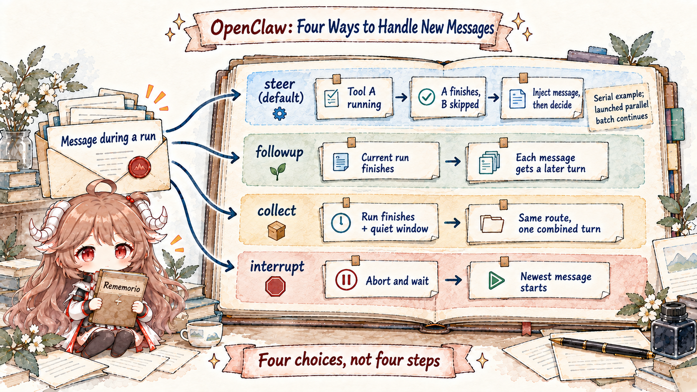
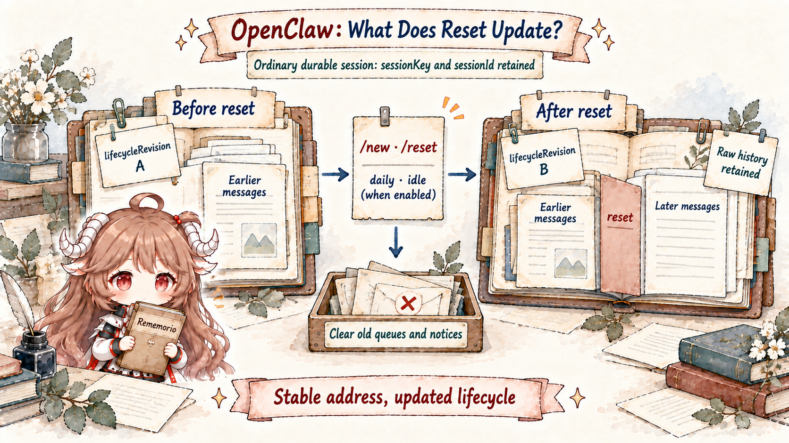

Alice first messages an agent privately from Telegram, then from Slack. She also mentions it in a Discord project group and opens a thread beneath that group. If history is keyed only by the display name “Alice,” private conversations, team context, and thread work collapse together. If everything is isolated by channel, switching to Slack makes the agent act like a stranger.
This is not a prompt problem. Before the model sees history, the runtime needs a stable, explainable, persistent address that also controls concurrency. OpenClaw produces a route, whose central field is sessionKey. The key indexes session state and becomes the embedded run's session lane.
A route says where a message belongs. When Alice adds “do not edit generated files” while tools are running, the runtime must also decide whether the message belongs to this turn or a later one. Queue mode owns that temporal decision. Routing and queuing jointly preserve transcript causality.
Reading contract.By the end, you should be able to distinguish binding (target agent), DM scope (how direct identities collapse), identityLinks (explicit canonical peer mapping), sessionKey (stable address), sessionId (persistent history identity), lifecycleRevision (current lifecycle), and transcript (messages and boundary events). You should also be able to explain the distinct effects of steer, followup, collect, and interrupt.
Evidence boundary.This chapter stays on e6b4264, using resolve-route.ts, auto-reply queue source, and the official Session and Command queue contracts. Cross-session memory retrieval does not change the session key; part four handles it separately.
1. How routing selects the agent and session history
1.1 Route chooses the handler and history; reply target chooses delivery
A channel reply target says where outbound content should be delivered. A route says who owns the run and history. They are often related but not identical. Channel docking can move a direct session's reply route to another linked channel without creating a session. Conversely, group and private work should retain different owners even when both eventually deliver through one app.
ResolvedAgentRoute returns agentId, channel, accountId, effective dmScope, sessionKey, mainSessionKey, lastRoutePolicy, and matchedBy. The diagnostic matchedBy explains whether a peer, parent peer, wildcard, guild+roles, guild, team, account, channel, or default rule won.
Logging only the final agentId is not enough to debug routing. Without the match source, an operator cannot tell whether configuration failed to match, a more specific rule won, or a thread inherited a parent binding.
1.2 Bindings choose the agent; session policy builds the key
Bindings are configuration-level route rules. They can target a channel, account, peer, guild, roles, or team to select an agent. The source indexes bindings by channel/account and evaluates more specific peer and group constraints before account, channel, and default fallbacks. This both avoids scanning every binding per message and makes precedence testable.
After agent selection, buildAgentSessionKey passes agent, main key, channel, account, peer kind/id, dmScope, groupScope, and identityLinks into the session-key builder. Model provider is deliberately absent: switching providers should not silently create another conversation.
export function buildAgentSessionKey(params: {
agentId: string;
channel: string;
accountId?: string | null;
peer?: RoutePeer | null;
dmScope?: "main" | "per-peer" | "per-channel-peer" | "per-account-channel-peer";
groupScope?: "main" | "per-group";
identityLinks?: Record<string, string[]>;
}): stringThe general rule is to choose the logical owner first, then derive the state address under a session-isolation policy. Hiding both decisions inside string concatenation makes privacy audits and migrations nearly impossible.
1.3 DM scope encodes privacy in the key
OpenClaw defaults to dmScope: "main", collapsing direct messages into the agent's main session. That is convenient for a single trusted personal user: Telegram and Slack continue one conversation. On a Gateway where multiple people can DM the agent, the same default lets Alice and Bob share a transcript.
| dmScope | Collapse dimensions | Use and risk |
|---|---|---|
main | All DMs → main session | Best single-user continuity; unsafe for unrelated users. |
per-peer | Canonical peer across channels | Cross-channel continuity requires trustworthy identityLinks. |
per-channel-peer | Channel + peer | Recommended multi-user isolation; channels do not auto-trust. |
per-account-channel-peer | Account + channel + peer | Strongest multi-account isolation, least continuity. |
The choice is not merely “should the agent remember me?” It is “which external identities may read the same private history?” Privacy belongs in the key, before the model sees anything.
1.4 identityLinks merge identity without merging authority
identityLinks can map a Telegram identity and a Slack identity to one canonical peer so per-peer yields one session. It is explicit normalization, not fuzzy display-name matching. Automatic merging would turn a convenience feature into an identity-confusion vulnerability.
Linked identities do not merge every conversation. Groups, rooms, and channels remain separate by default under groupScope: "per-group". Explicit main routes them into the selected agent’s main session independently of identityLinks. rememberAcrossConversations may retrieve relevant fragments from other private transcripts, but it neither changes keys nor combines transcripts. Identity, session, and retrieval are separate layers.
A matching binding can override global groupScope. For example, join only Alice's trusted team channel to the main conversation while other rooms stay separate:
{
"session": { "groupScope": "per-group" },
"bindings": [{
"agentId": "assistant",
"match": { "channel": "slack", "peer": { "kind": "channel", "id": "C0123TEAM" } },
"session": { "groupScope": "main" }
}]
}This configuration fragment assumes an existing assistant agent. It changes the base history address, not mention gating or the source room's reply target; channel-specific thread routing still needs its own check. The key builder handles direct peers before groupScope, so this setting does not change DM policy. Joining a room to main can also share history with default main-scoped DMs; use it only where the trust boundaries match.
1.5 Threads participate in routing and binding inheritance
A thread cannot be treated as cosmetic message metadata. Different threads under one group usually represent different tasks and need separate sessions. Yet a thread may inherit its agent binding from the parent peer, which is why route input can carry both peer and parentPeer.
matchedBy: "binding.peer.parent" makes that inheritance observable. Otherwise, the same selected agent would conceal whether the thread matched directly or fell back to its parent. Inheritance rules belong in diagnostics, not only in hidden fallbacks.
1.6 Separate address, history identity, and lifecycle revision
sessionKey is the routing, storage, and concurrency address; sessionId identifies its transcript; lifecycleRevision distinguishes the current lifecycle. These do not reduce to “every reset rotates sessionId.” Current initialization retains an ordinary durable session's existing sessionId through /new, /reset, or enabled daily/idle resets for cursor continuity. ACP resets and tombstone parent-fork restarts instead generate a new ID.
The stable address preserves reachability; stable history identity keeps earlier messages queryable; a new lifecycle revision distinguishes runtime state before and after reset. lifecycleRevision is a lifecycle concurrency-check field, not a synonym for transcript generation.
2. How queues arrange the active run and later messages
2.1 Four choices: steer, followup, collect, interrupt

When no run is active, a message can start immediately. With an active run, each mode defines a different causal contract:
- steer: the default. Steer does not cancel running tools. The built-in loop can skip unstarted serial tail calls, then inject pending messages before the next model call. Already-launched parallel batches have a different boundary, described below; unsupported steering falls back to followup.
- followup: leaves the active run unchanged and queues each message as a later agent turn.
- collect: also avoids steering but coalesces messages after a quiet window; different delivery routes drain separately.
- interrupt: aborts the current session run, then starts the newest message. It fits “stop, this direction is wrong,” not ordinary clarification.
resolveQueueSettingsCore resolves inline choice, persisted session override, channel config, global config, then default steer. An explicit choice for this session appropriately outranks deployment defaults.
2.2 Steer waits for a safe tool handoff
Suppose the assistant proposes serial tool A, “inspect build artifacts,” then B, “delete old files.” While A runs, the user says “do not delete yet.” That message cannot rewrite A's submitted arguments, but the built-in loop's pre-launch check can skip unstarted B after A finishes. B still receives a paired result with status: "skipped" and deniedReason: "steering", not a fabricated success; the user message then enters the next model decision.
If A and B already crossed a parallel batch's launch checkpoint, both continue to completion. Steer cannot undo side effects. The boundary is “running calls finish; unstarted serial tail calls may be skipped,” not “always execute the entire tool list.” Runtime contracts also differ: the native Codex harness calls turn/steer after a quiet window, and upstream accepts the message at its next model boundary. The built-in loop's per-tool checks must not be projected onto that runtime. Use interrupt for an explicit stop; aborting still does not roll back external effects.
2.3 Session and global lanes prevent different collisions
Each embedded run enters a session:<key> lane, allowing at most one active writer for a session. It then enters the global main lane, where agents.defaults.maxConcurrent limits runs across sessions. One global mutex would let Alice's long task block everyone; only a global cap would permit concurrent writers in one transcript.
Queue mode decides what an inbound message does while its session is busy. Lanes decide which runs may execute simultaneously. Collect still needs a session lane. maxConcurrent=1 does not imply steer—it merely makes a second run wait.
2.4 Queued messages retain requester and cancellation identity
Followup and collect work cannot live in an anonymous array before activation. The Gateway retains a cancel identity for each client runId until the item runs, drops, or becomes part of an overflow summary. chat.abort can cancel a particular queued run. A session-scoped abort cancels authorized queued work before active work so queue drain cannot promote another turn while stopping.
Waiting is an authorization-bearing ownership state.Without requester and session identity on queued content, a multi-owner session cannot safely let one caller cancel only its own work.
3. How session rollover protects history and asynchronous work
3.1 Reset appends a boundary and clears old lifecycle state

SessionEntry timestamps own different policies. sessionStartedAt marks when the current lifecycle began and drives daily reset. lastInteractionAt advances on real user/channel interaction and drives idle reset. updatedAt records any row mutation, including bookkeeping, heartbeat, or cron work, and must not keep a session artificially fresh. Daily and idle policies require explicit enablement; the optional triggers in the figure do not imply periodic reset for every session.
This ordinary durable initialization path does not archive the old transcript. It appends a reset boundary in the same history: manual /new//reset uses context: "clear", while automatic expiry uses preserve-tail. The latter can retain recent conversation turns, so raw history and the current model window remain distinct. Boundary append and session-entry update commit in one transaction, and earlier messages remain searchable.
When an explicit reset stops child work before committing, the cleanup guard checks both sessionId and lifecycleRevision to avoid touching a session that has already advanced. After commit, best-effort cleanup clears old queued followups, system events, and active-run registry state; a cleanup exception is logged rather than turning a durable reset into a reported failure. Diagnosing late work requires more than comparing keys or assuming an ordinary reset always creates a different sessionId.
Incognito is a different storage mode: session row, transcript, and compaction state stay in process memory and vanish on Gateway restart. It does not restrict tool file writes or prevent the model provider from processing messages. “No session transcript on disk” is not “no external effect” or complete privacy.
3.2 Transcript appends messages and tool results in causal order
Routing and queues ultimately protect transcript order. User message, assistant tool call, tool result, steering input, and final reply must persist in occurrence order. Reset and compaction boundaries change the replay window, while repair has separate structural duties; the session owner still serializes writes.
Channel plugins should not append their own parallel JSONL truth, and two runs should not choose the same “last message” as parent. Current OpenClaw keeps runtime session rows and hot transcript in each agent's openclaw-agent.sqlite. Legacy JSON/JSONL is migration input or archival form, not a second live owner.
3.3 Diagnose routing, queues, and lifecycle separately
| Symptom | Inspect first | Do not change first |
|---|---|---|
| The same user “forgot” | Route inputs, matchedBy, dmScope, identityLinks, sessionKey. | Do not immediately enlarge prompt or memory. |
| Different users share history | Whether multi-user DMs still collapse to main. | Do not ask the model to enforce privacy. |
| Clarification did not change the active tool | Queue mode, tool boundary, runtime steering support. | Do not assume steer aborts an in-flight tool. |
| Old work appears after reset | sessionId, lifecycleRevision, and reset cleanup for the current lifecycle. | Do not deliver by sessionKey alone. |
| All chats block one another | Global lane and maxConcurrent. | Do not remove per-session serialization. |
4. Six routing and session rules to carry forward
- Routing assigns space; queuing assigns time.Together they define transcript causality.
- Separate agent selection from key construction.Bindings choose the agent; dmScope, groupScope, and identityLinks determine session isolation.
- Encode privacy in the key.A prompt cannot repair an unsafe multi-user DM collapse.
- Separate address, history identity, and lifecycle.Reset can retain sessionKey/sessionId while changing the lifecycle revision and model window.
- Inject steering at a safe runtime boundary.New text cannot rewrite side effects already submitted.
- Queued items have owners.Cancel, drop, and overflow summary must preserve requester/run identity.
Part four goes inside the selected session to separate workspace, bootstrap, system prompt, history, compaction, and memory. Routing guarantees which history belongs to the user; context assembly decides which parts are actually visible to the model in this run.
Source and documentation index
- resolve-route.ts: binding precedence, route result, and session-key construction.
- session-key.ts: agent session key parsing and special key shapes.
- queue/settings.ts: mode, debounce, cap, and drop precedence.
- get-reply-run-admission.ts: active run, steer/followup, and interrupt admission.
- Session management, Command queue, and Steering queue: public semantics.